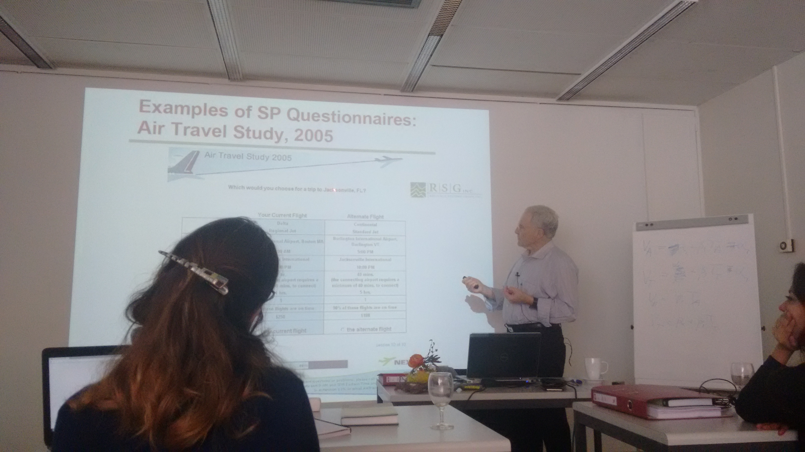

Discrete Choice Analysis Course EPFL Lausanne
19-24 March 2016
written on 26 March 2016
Just returned from a trip to Lausanne, Switzerland where I attended the Discrete Choice Analysis (DCA) course. The lecturers Moshe E. Ben-Akiva and Michel Bierlaire, and all the course assistants provided a very open and welcoming lecturing environment. The course was very well structured on the discussion of the foundations of DCA, the presentation of more advanced Discrete Choice models such as mixtures, probit models and models with latent or panel variables as well as experiment design and model specification. The experience and passion of the lecturers allowed for a wide understanding both on a technical and practical level, including issues commonly faced when applying Discrete Choice models.
After the lectures, labs were organized for the application of the tought models using BIOGEME, which was awesome, as you get hands on experience on a very advanced software developed by Michel Bierlaire.

One of the great things about this trip was that I met great people in both Zurich and Lausanne. I need to thank all of them for helping me through with accommodation and other practical matters (super saver tickets, metro stations, EPFL campus etcetera)!
